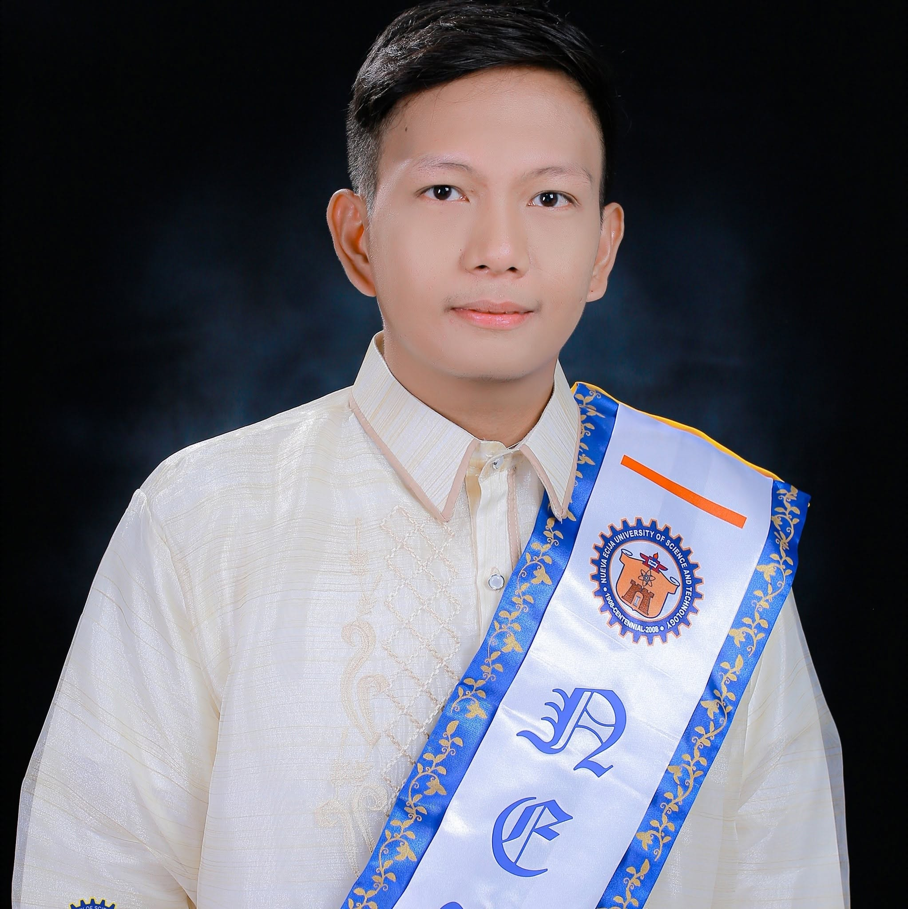

Technical Assistant
Manuel V. Gallego Foundation College Inc.
Apr 2026 — Present
Technical and administrative support for PAIEO operations, institutional records, reports, and the PAIEO Management Information System.
Technical Assistant · IT Support
BSIT graduate with experience in technical support, office administration, data analysis, records handling, and practical system development.

R-D C. Reyes
Information Technology
01
About
I am a motivated and detail-oriented BSIT graduate with a background in database application programming, IT support, and office administration. My work covers troubleshooting, system installation, data analysis, and support for daily office operations.
02
Experience
Technical Assistant
Manuel V. Gallego Foundation College Inc.
Apr 2026 — Present
Technical and administrative support for PAIEO operations, institutional records, reports, and the PAIEO Management Information System.
IT Staff
SPS. M&C Corp.
Aug 2023 — Apr 2026
Technical support for hardware, software, network, computer systems, printers, and staff IT concerns. Maintained IT asset inventory.
Office Clerk
NEUST Laboratory High School
Jul 2021 — Jun 2023
Handled filing, encoding, reports, office communication, organized records, and administrative and technical assistance.
03
Selected work
CURRENT ROLE
Develop, maintain, and improve a system for PPA processing, records management, accreditation evidence, monitoring, and reporting. Create digital workflows for submission, routing, review, approval, electronic signatures, and file storage.
CAPSTONE PROJECT
A digital platform designed to collect, store, manage, and analyze community-related data for planning, resource allocation, and service delivery.
INTERNSHIP
Created Excel and Tableau Public data visualizations, designed Canva infographics, and conducted Google Forms surveys for data gathering and analysis.
04
Credentials
Skills
Certifications
05
Education
Major in Database Application Programming
Nueva Ecija University of Science and Technology, Sumacab, Cabanatuan City
2017 — 2021